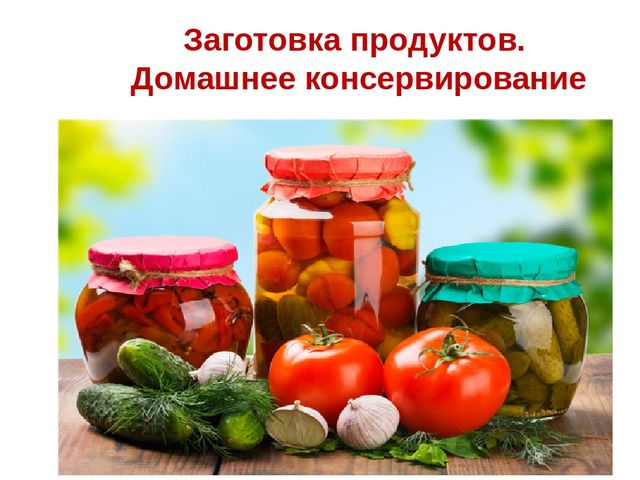

Для того чтобы приготовить домашнее вино, нужно иметь пастеризованные или свежие соки, но они не должны быть подсахаренными или разбавленными водой. Состав питательных и вкусовых веществ в них почти такой же, как и в свежих фруктах и плодах. Соки нужно делать только из вполне спелых плодов, потому что незрелые повышают кислотность и не придают характерной окраски вину. Из перезревших плодов и ягод трудно выжать сок, который к тому же плохо осветляется и фильтруется. Испорченное сырье использовать нельзя.
Сок можно получить с помощью шнековой и электросоковыжималки, винтового пресса. Инструменты и приспособления должны быть сделаны из нержавеющей стали.
Обычную мясорубку использовать нельзя, потому что соли железа, попадая в сок, отрицательно влияют на его цвет и вкус.
Такие ягоды, как малина, крыжовник, рябина, слива, облепиха, брусника, клюква, черная смородина, которые не очень легко отдают сок, нужно предварительно нагреть до 70 °C, добавить 10–13 % воды и выдержать их при такой температуре в эмалированной посуде около 20 минут. Без охлаждения из этих плодов отжимают сок. Можно повысить выход сока, если плоды измельчить.
Количество и качество сока можно повысить, если мезгу предварительно подвергнуть подбраживанию.
ПодбраживаниеВ бочку или в эмалированное ведро помещают мезгу; в мезгу добавляют холодную кипяченую воду и разводку дрожжей, после перемешивания массы тару закрывают марлей, потом крышкой. Массу следует выдерживать сутки при температуре 17–25 °C.
При всплывании мезги ее перемешивают. Спустя 48–60 часов можно уже получить сок, отжав мезгу. Его нужно пастеризовать (довести до 80–85 °C) и сразу разлить в чистые, ошпаренные стеклянные банки. Банки следует закупорить крышками и опять пастеризовать (температура – 85 °C) в течение 15–20 минут.
В стеклянные бутыли объемом 10–15 л налить сок, добавить сахарный песок, разводку дрожжей и воду. Сахар растворить, тщательно перемешивая смесь. Необходимо оставить около 20–25 % объема бутыли для того, чтобы избежать перелива смеси при брожении.
Бутыль закупорить ватной пробкой, обернутой марлей. Углекислота, выделяющаяся при брожении, сможет выходить через такую самодельную пробку.
Бутыль необходимо затемнить, для этого ее нужно обернуть бумагой.
Лучшая температура для брожения 17–20 °C, при ней этот процесс закончится через 30–40 дней, углекислый газ перестанет выделяться и полученный продукт – сброженное плодово – ягодное сусло – постепенно осветлится.
Приготовление дрожжевой разводкиКак правило, на поверхности ягод и плодов есть дикие дрожжи. Их следует сохранять, так как они обладают очень высокой бродильной способностью.
Чтобы приготовить разводку, достаточно взять кожицу 5–8 яблок, на которой необходимо максимально сохранить восковой налет, содержащий дрожжевые клетки. Приготовить сироп, растворив 150–200 г сахара (неотбеленного) в 1 л воды. В стеклянную банку положить кожицу яблок, налить сироп. В эту же банку желательно добавить раздавленные с помощью деревянного пестика немытые, но отборные, неповрежденные ягоды вишни, смородины, крыжовника. Их можно заменить столовой ложкой изюма.
Все нужно перемешать и выдержать смесь в течение 3–4 дней в условиях комнатной температуры. Через 2–3 дня должны появиться явные признаки брожения.
Если такие признаки не обнаружены, то следует ввести в смесь в небольшом количестве хлебопекарные прессованные дрожжи.
При желании хлебопекарные дрожжи допустимо вводить одновременно с дикими. В этом случае берут треть брикета прессованных дрожжей, разводят их в 250 г кипяченой теплой воды (25–27 °C) и вливают в банку с яблочной кожицей. Начала брожения можно ожидать через 2 дня.
Полученную разводку можно добавлять в плодово – ягодное сусло. Но ее нужно готовить заранее, за 5—10 дней до того, как будет готово сладкое плодово – ягодное сусло. Необходимое количество разводки определяют относительно объема сусла. На 10 л готовят 0,4–0,5 л дрожжевой разводки.
Брожение суслаСо дня внесения дрожжевой разводки проходит 2–3 дня, когда сладкое сусло начинает бурно бродить, а через 25–30 дней брожение уже заканчивается. Начинается этап осветления молодого вина, длящийся 10–20 дней, при этом на дно выпадают дрожжи и осадок.
Когда вино готово, нужно очень осторожно перелить его в стеклянную бутыль или эмалированную кастрюлю, не допуская попадания осадка. Для этого можно прибегнуть к помощи тонкого шланга из резины. Чтобы вино по шлангу самотеком перелилось в другую емкость, нужно поместить бутыль выше (например, на стол), чем емкость, в которую следует слить прозрачное вино.
Один конец шланга опускают в средний слой вина, другой – в сосуд, стоящий на полу или на стуле, предварительно затянув ртом небольшое количество вина в трубку.
Молодое вино лучше всего хранить в бутылках объемом 0,5–0,75 л, наполняя их почти до самой пробки, оставляя незаполненное воздушное пространство высотой примерно в 3 см. Для хранения вино желательно поместить в прохладное место, в противном случае его нужно пастеризовать 5 минут (температура пастеризации 60–65 °C).
Если предполагается проводить пастеризацию (пастеризуют закупоренные бутылки), то воздушное пространство между вином и пробкой требуется увеличить.
Крепость полученному напитку придает спирт, который образуется из сахара при сбраживании. Чем больше было добавлено сахара, тем крепче получится вино. При добавлении на 1 л 20 г сахара крепость вина повышается на 1°. При расчете количества сахара нужно не забывать, что он уже содержится в ягодах и плодах, поэтому его добавляют несколько меньше.
Кроме того, в вине должна присутствовать кислота – около 6–7 г на 1 л. Уменьшать кислотность можно с помощью добавления воды еще до брожения, в плодово – ягодный сок.
1 л сока черники, яблок, ежевики содержит 8 г кислоты, шиповника – 19 г, черной смородины – 26 г, земляники – 12 г, красной смородины – 23 г, клюквы – 24 г, облепихи – 28 г, садовой рябины – 23 г, терна – 35 г, малины – 14 г, крыжовника – 16 г, вишни – 18 г, сливы – 10 г.
Исходя из этого можно сделать расчет, какое количество воды нужно добавлять в 1 л плодово – ягодного сока, чтобы полученное вино содержало 6–7 г кислоты на литр.
Так, например, сок крыжовника содержит в 1 л 16 г кислоты, в вине же ее должно быть 7 г. Учитывая, что при брожении утрачивается часть кислоты, то в расчет нужно взять ее содержание за 8 г. Чтобы добиться содержания кислоты в 1 л вина, равного 8 г, нужно в поллитра сока добавить пол – литра воды. При этом нельзя забывать, что в вино еще 3 раза будет прибавляться разбавленный водой сахар. Все это нужно иметь в виду при расчете общего количества, а значит, в первый раз ее необходимо брать несколько меньше.